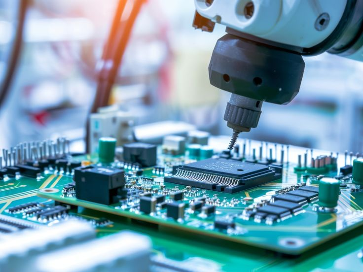

Build & design
Computer Engineer
Integrates hardware and software to design, test, and improve complete computing systems.
Systems integration and product developmentWhere computer engineering can lead
Computer Engineering graduates move between code, circuits, data, infrastructure, and research. Each path connects technical skill with meaningful work.
Browse career paths
A degree with range
Computer engineers can work close to the hardware, deep in software, or at the intersection of both. The same foundation can open doors in product teams, operations, security, research, and technical leadership.
Career pathways
Integrates hardware and software to design, test, and improve complete computing systems.
Systems integration and product development
Writes firmware and connects sensors, processors, and electronics inside smart products.
Firmware and device developmentCreates connected devices and services that gather data and respond to the physical world.
Connected products and smart environments
Develops applications and services, then tests and maintains them as users and needs grow.
Application and platform developmentDesigns and validates circuit boards, processors, and electronic components for reliable products.
Electronics and computer architecturePlans, configures, and monitors the networks that keep organizations and devices connected.
Connectivity and network performanceCoordinates hardware, software, and processes so complex technology environments work together.
Architecture and system reliabilityBuilds defenses, investigates threats, and strengthens systems against attacks and data loss.
Risk management and security operations
Builds pipelines and storage systems that make trustworthy data available for analysis and decisions.
Data platforms and information flow
Trains, evaluates, and deploys models that recognize patterns and support smarter decisions.
Predictive systems and intelligent applications
Designs and manages scalable cloud environments, services, access, and deployment resources.
Cloud platforms and distributed systemsAutomates build, testing, and release workflows so teams can deliver software reliably.
Automation and delivery pipelines
Combines mechanics, electronics, and code to create machines that sense, move, and act.
Automation and autonomous machines
Diagnoses technical issues, guides users, and turns recurring problems into better systems.
Troubleshooting and user enablement
Explores new ideas, prototypes solutions, and tests technologies before they become products.
Innovation and applied research